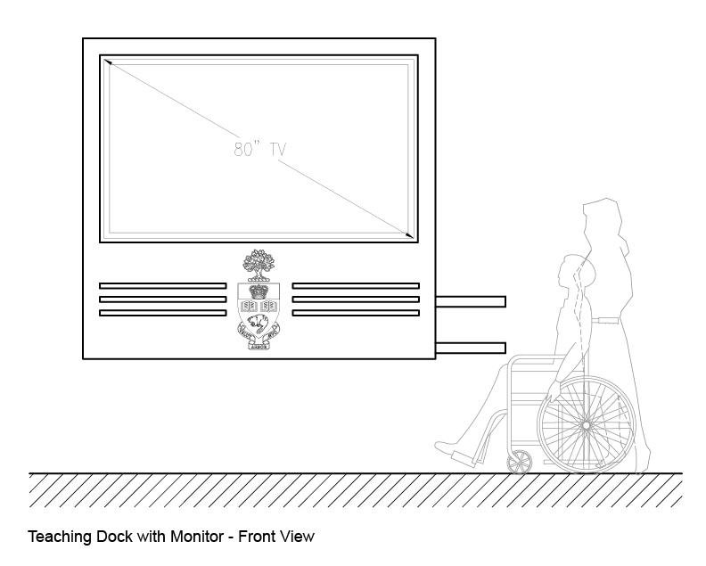
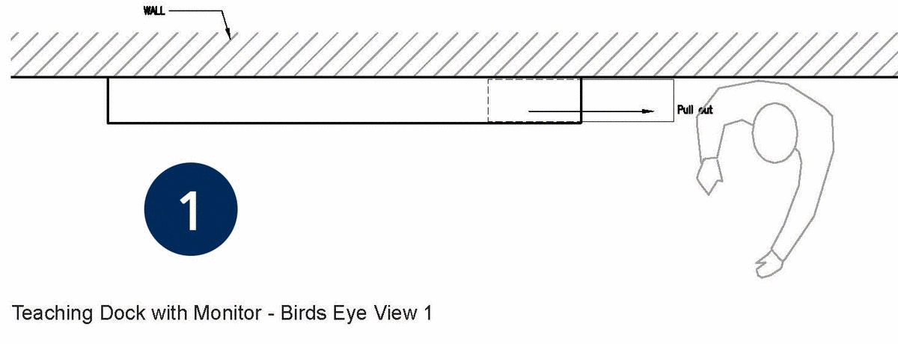
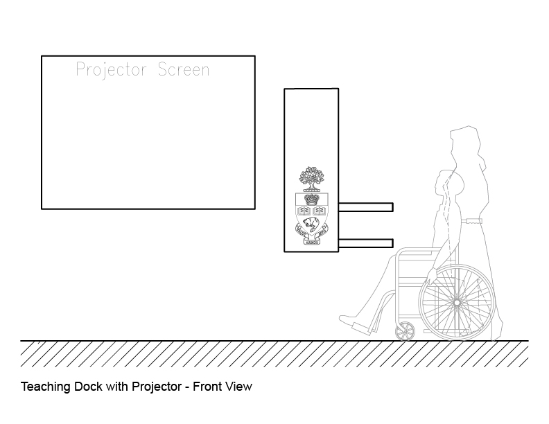
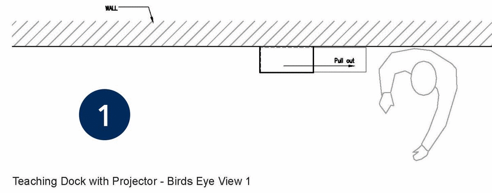

Teaching Dock
Teaching Dock with Monitor
 Teaching Dock with Projector
 
The Teaching Dock is a completely new AV technology initiative with the main goal of creating an option to provide AV capabilities in rooms with capacities below 36. The Teaching Dock offers all the same abilities as the Teaching Station Jr. but with a slimmer and smaller footprint allowing for more teaching space in classrooms as well as its inclusion in rooms that historically would be unable to offer a permanent teaching aid. The Teaching Dock has two display designs - the Teaching Dock with Monitor sporting an 80" LED display screen with HDMI, VGA, and Ethernet inputs allowing for easy connection with source material/device. As well as the Teaching Dock for Projector, offering the same connectivity but with a projector and screen display. Both Teaching Dock designs will offer intercom tech support, control panel, and a device shelf at both counter height and barrier-free height.
Give feedback on your Teaching Dock